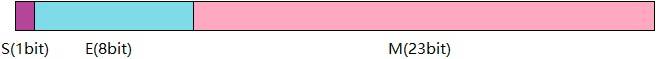
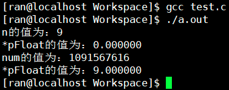

IEEE 754规定任意一个二进制浮点数V可以表示成下面的形式：
例如下图是32位单精度浮点数存储模型（64位的双精度浮点数最高的1位是符号位S，接着的11位是指数E，剩下的52位为有效数字M）

其中S表示符号位，当S=0，V为正数；当S=1，V为负数
M表示有效数字，1≤M<2（规约形式）
E表示指数位
eg:
十进制6.125，用拈加法写成二进制是110.001，等价于1.10001×22。可以得出S=0，M=1.10001，E=2
十进制-6.125，写成二进制是-110.001，等价于-1.10001×22。那么，S=1，M=1.10001，E=2
由于M默认这个数的第一位总是1，因此可以被舍去，只保存后面的小数部分。比如保存1.01的时候，只保存01，等到读取的时候，再把第一位的1加上去。这样做的目的，是节省1位有效数字。以32位浮点数为例，留给M只有23位，将第一位的1舍去以后，就可以保存24位有效数字
指数偏差
E为一个无符号整数，如果是单精度浮点数，E为8位，它的取值范围为0~255；如果是双精度浮点数E为11位，它的取值范围为0~2047。科学计数法中的E是可以出现负数的，所以IEEE 754规定，存入内存时E的真实值必须再加上一个中间数，对于8位的E，这个中间数是127(01111111)对于11位的E，这个中间数是1023。 比如，210的E是10，所以保存成32位浮点数时，必须保存成10+127=137，即10001001，127在这里叫做指数偏移值
规约形式的浮点数
如果浮点数中指数部分的编码值其中的e为存储指数的比特的长度（E不全为0或1）
比如，单精度(32-bit)的规约形式浮点数在指数偏移值的值域为[00000001,11111110]，M的范围是[000…000,111…111]=>23-bit
eg:
十进制0.5的二进制形式为0.1，由于规定正数部分必须为1，即将小数点右移1位，则为1.0×2(-1)，其阶码为-1+127=126，表示为01111110，而尾数1.0去掉整数部分为0，补齐0到23位00000000000000000000000，则其二进制表示形式为:
0 01111110 00000000000000000000000
非规约形式的浮点数
E全为0，M非零，这时，浮点数的指数E等于-126（或者-1022）即为真实值，需要注意的是这里并不是-127（这样是为了保证中间数据近似连续）有效数字M不再加上第一位的1，而是还原为0.xxxxxx的小数（规约浮点数的尾数大于等于1且小于2，而非规约浮点数的尾数小于1且大于0）这样做是为了表示±0，以及接近于0的很小的数字
±0
E全为0，M全为0，表示±0（正负取决于符号位S）
±∞
E全为1，M全为0，表示±∞（正负取决于符号位S）
NaN
E全为1，M不全为0，表示这个数不是一个数（NaN）
测试
1 | int n = 9; |

第一部分：
int类型的9在内存中是这样存储的（32位环境）
0000 0000 0000 0000 1001
将它的地址强转成float类型后：
其符号位S=0
8位的指数E=0000 0000
由于指数为全是0，它属于非规约形式的浮点数，尾数小于1且大于0，所以M=0.00000000000000000001001（小数点后有23位）
因此，浮点数V就写成：
V=(-1)0× 0.00000000000000000001001×2(-126)=1.001×2(-146)
它表示一个接近于0的很小的数字，十进制表示就是0.000000
第二部分：
float类型的9.0在内存中是这样存储的（32位环境）
9.0=>1001.0=>1.001×23=> s=0, M=1.001,E=3+127=130
0 10000010 001 0000 0000 0000 0000 0000
强转成十进制，就是1091567616